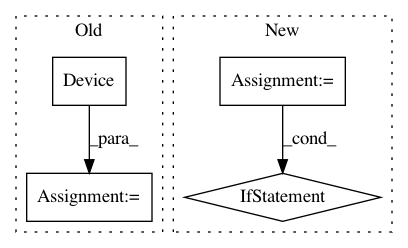

4ccedca3e5cbd98ad8149d5ebed45d37ad09225a,homeassistant/components/device_tracker/__init__.py,DeviceTracker,__init__,#DeviceTracker#Any#Any#Any#Any#,140
Before Change
dev_id = str(dev_id)
device_dict = device_dict or {}
away_hide = device_dict.get(CONF_AWAY_HIDE, False)
device = Device(
hass, self.consider_home, device_dict.get("track", False),
dev_id, device_dict.get("mac"), device_dict.get("name"),
device_dict.get("picture"), away_hide)
if device.mac:
self.mac_to_dev[device.mac] = device
self.devices[dev_id] = device
After Change
self.track_new = track_new
self.lock = threading.Lock()
for device in devices:
if device.track:
device.update_ha_state()
// pylint: disable=too-many-arguments
def see(self, mac=None, dev_id=None, host_name=None, location_name=None,
gps=None):
Notify device tracker that you see a device.
with self.lock:
In pattern: SUPERPATTERN
Frequency: 4
Non-data size: 4
Instances
Project Name: home-assistant/home-assistant
Commit Name: 4ccedca3e5cbd98ad8149d5ebed45d37ad09225a
Time: 2015-09-12
Author: paulus@paulusschoutsen.nl
File Name: homeassistant/components/device_tracker/__init__.py
Class Name: DeviceTracker
Method Name: __init__
Project Name: onnx/onnx-tensorflow
Commit Name: 054095d922edda5134e520522bc82a1b95cc5bd4
Time: 2020-09-09
Author: smonov@gmail.com
File Name: onnx_tf/backend.py
Class Name: TensorflowBackend
Method Name: run_node
Project Name: home-assistant/home-assistant
Commit Name: bfb5089ed59f1df8cf53a3b517ac6b091f539a26
Time: 2015-03-08
Author: andyt05@gmail.com
File Name: homeassistant/components/device_tracker/nmap_tracker.py
Class Name: NmapDeviceScanner
Method Name: _update_info
Project Name: home-assistant/home-assistant
Commit Name: 4ccedca3e5cbd98ad8149d5ebed45d37ad09225a
Time: 2015-09-12
Author: paulus@paulusschoutsen.nl
File Name: homeassistant/components/device_tracker/__init__.py
Class Name: DeviceTracker
Method Name: __init__
Project Name: home-assistant/home-assistant
Commit Name: edf500e66b9122837c2e46f4615a89aa058e10ec
Time: 2017-04-11
Author: paulus@paulusschoutsen.nl
File Name: homeassistant/components/media_player/openhome.py
Class Name:
Method Name: setup_platform